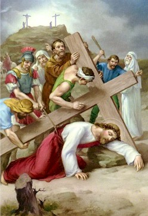

Hmunkuanak
Ⅸ

P : Christu Bawipa, nangmah cu kan lo biak ih kan lo lawm asi
M : Zianghrangah tile na thianghlim thinglamtah in leitlun minung hmuahhmuah cu na tlen zo asi.
P : Bawipa Jesuh cu Calvary tlang par a thleng zik thlang asi. Thinglamtah ih thahnak a tuarnak ding hmun a thleng hlan te ah a tha a cem tuk ih leilung ah voithumnak a sawn asi. Hi bangtuk ih a tluk tikah ralkap pawl in zaangfahnak zianghman nei lo in Bawipa cu an tul, an dir, naa zet in an thawi ih an vel bet asi.
Thla kan cam pei :
Aw kan Bawipa Jesuh, na nat tuk ruangah voithum tiang na sawn asi. Nangmah zaangfahnak in kan sualnak hmuahhmuah le sualnak sung ih caan reipi kan umnak tla khi in rak ngaithiam aw. Cun na tuarmi ṭihnungza zonzaihnak khi ruat in kan tuahsualnak hmuahhmuah khal nikhat hnu nikhat kan hua theinak dingah in zaangfah aw.
Vancung ih a um kan Pa...
Ave Maria...
Pa, Fapa, Thiang Thlarau hnen ah...
P : Bawipa kanmah in zaangfah aw.
M : Kanmah in zaangfah aw.
P : A thi zo mi ih thlarau tla cu Pathian zaangfahnak in nunnuamnak sungah rak cawl tlang thlang seh law.
M : Amen.
9.Duhdawtnak nei tu kanmaih Nu, Riahsiat thinlung i nei ter aw, Nangmah thawn ṭap tlang ka duh.